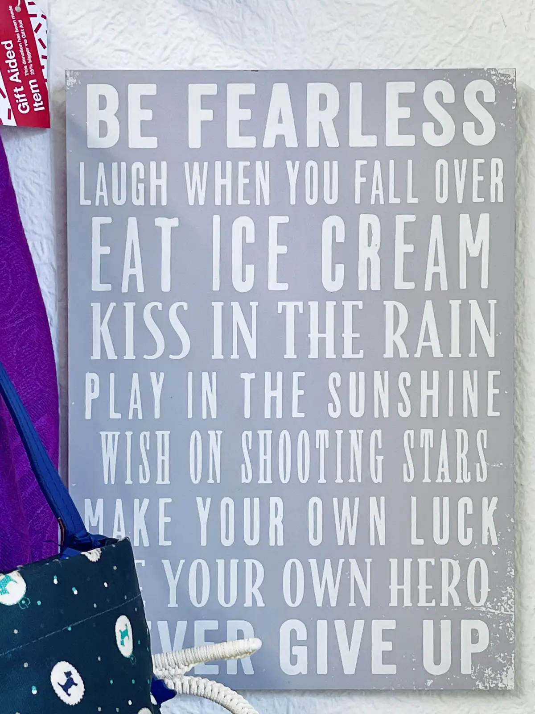

Happy Friday! Thank you for supporting the Daily Bulletin project.
- Suggest improvements to the Daily Bulletin project.
- Unsubscribe if you no longer wish to receive emails from the Daily Bulletin project.
Wellbeing Inspirations
Want to contribute to a future Daily Bulletin? Share your inspirations to give everyone some morning wellbeing energy!
Quote of the Day

Photo by Albert Tan.
Delicious Dinings
| Day | Meal | Options |
|---|---|---|
| Fri | Breakfast | Burrito |
| Lunch | Fish & Chips | |
| Crispy Buttermilk Quorn 🌱 | ||
| Dinner | Hong Kong Maccheroni | |
| Roast BBQ Pea Protein | ||
| Sat | Breakfast | Hot Breakfast |
| Lunch | Veggie Enchiladas 🌱 | |
| Dinner | Bratwurst | |
| Vegan Currywurst 🌱 |
The catering team would like to remind everyone to wash their hands before coming to the dining hall, and to refrain from eating in the servery area. Thank you!
Retrieved from Shared Weekly Menu. For reference only; accuracy not guaranteed.
Important Events
| Day | Time | Event | Location |
|---|---|---|---|
| Fri | 14:00–14:30 | Tutorial | Tutor Rooms |
| 14:30–15:30 | Community Gathering | Sports Hall | |
| 19:00–22:00 | Haunted Castle | Tythe Barn | |
| 20:00–22:00 | Hideout | Moondance |
Retrieved from What's On This Week.
Today in History
- 1809 – As part of the Persian Gulf campaign, a British flotilla arrived at and launched an amphibious assault on Ras Al Khaimah.
- 1945 – FC Dynamo Moscow opened their exhibition tour of the United Kingdom with a 3–3 draw against Chelsea, breaking the attendance record for a British club football match.
- 1966 – Arab–Israeli conflict: In response to a Fatah landmine incident, the Israeli military conducted a large cross-border assault on the Jordanian-controlled West Bank village of Samu.
- 1974 – Six members of the DeFeo family were murdered in their home in Amityville, New York, events that later inspired the book The Amityville Horror and a subsequent media franchise.
- 1992 – In Dietrich v The Queen, the High Court of Australia ruled that, although there is no absolute right to have publicly funded counsel, a judge should grant any request for an adjournment or stay in most circumstances in which an accused is unrepresented.
Retrieved from Wikipedia.